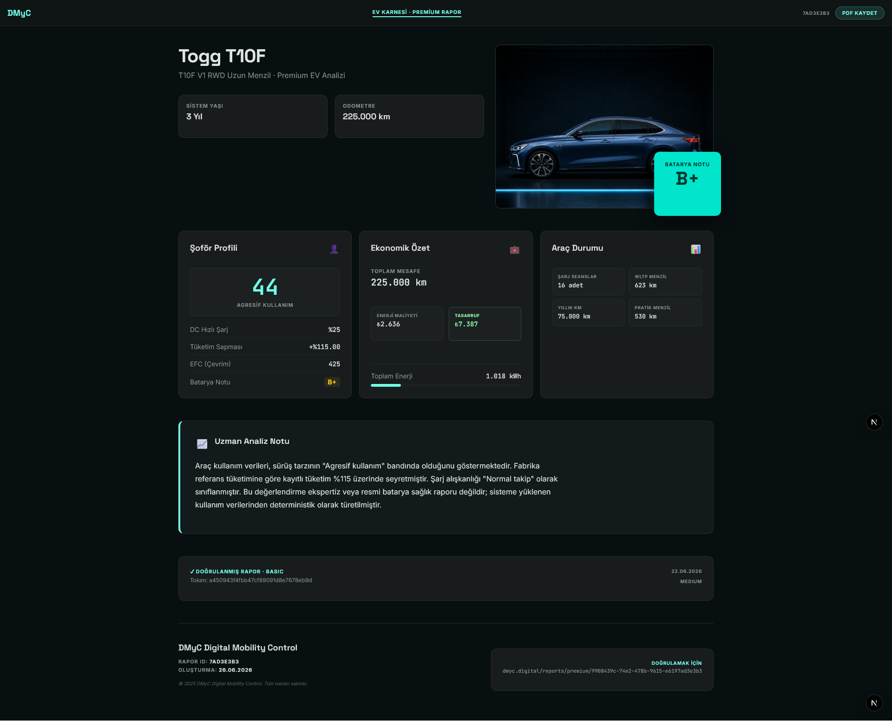

Elektrikli aracının
gerçek karnesini çıkar.
İlk gün araç seçimiyle başlar, sürdükçe seni tanır. Şarj alışkanlıklarından gerçek menziline, batarya sinyalinden tahmini araç değerine kadar — hepsi tek ekranda, sana özel.
Ücretsiz başla · TC yok · tam şase yok · ruhsat yok · OBD yok
Neler yapıyor?Elektrikli araç sahipleri hep aynı şeyleri sorar.
Ve çoğunun cevabı yoktur.
"Bataryam ne kadar sağlıklı?"
Hızlı şarj ne kadar kullandın, bataryan eskiyor mu — bunu sana söyleyen bir uygulama yoktu. Şimdiye kadar.
"Gerçekte kaç km yapabilirim?"
Üreticinin söylediği menzil seninki değil. Senin güzergahın, senin sürüş biçimin ve senin havan — hepsi farklı bir sayı verir.
"Sigortacıya ne göstereyim?"
Kasko için WhatsApp'tan fotoğraf atmak zorunda kalmak saçma. Aracının teknik geçmişini gösteren düzgün bir belge olmalı.
İlk gün tahmin eder,
sürdükçe seni tanır.
Her yolculuk ve her şarj, aracını daha iyi anlamasını sağlar. Başlangıç karnesi zamanla kişisel sicile dönüşür.
Güzergahını tanır
4–5 yolculuktan sonra güzergahın "tanımlandı". Her hat için ortalama enerji tüketimi ve sürüş skoru ayrı takip edilir.
Şarj alışkanlıklarını analiz eder
AC mi DC mi daha çok kullanıyorsun? Çok dolu ya da çok boş şarj mı yapıyorsun? Bataryana zarar veren alışkanlıkları gösterir.
Sürüş skorun her gün güncellenir
Sert fren ve ani hızlanmalar menzilini kısaltır. Her yolculuk sonrası 0–100 arası skor hesaplanır, düşükse anında bildirim gelir.
Araç sicilini takip eder
TÜVTÜRK muayene tarihi, servis ziyaretleri ve km bazlı bakım geçmişi — hepsi kasko raporuna otomatik yansır.
Bu hafta ne kadar kazanabilirdin?
Daha verimli sürseydin ne olurdu? DMyC her hafta bunu hesaplar.
Senin gerçek menzilini hesaplar
"WLTP 623 km" değil, "bu sürücüde ~543 km" der. Sürüş stilin, güzergahın ve havan hesaba katılır.
Nasıl çalışır?
Karmaşık bir şey yok. Sürdükçe öğrenir.
Aracını ekle
Marka ve modeli seç, teknik bilgiler otomatik gelir. 2 dakika.
Sür ve şarj et
Arka planda çalışır, bir şey yapman gerekmez. Şarj yaptıkça, yolculuk yaptıkça DMyC aracını tanımaya başlar.
Karnenle bir şeyler yap
Batarya notunu gör, sigorta raporu oluştur, aracını satarken alıcıya gönder. Hepsi bir link.
İki tür rapor, iki farklı ihtiyaç.
İkisi de tarayıcıda açılır, PDF olarak kaydedilir.
Aracının sağlık raporu
Bataryan ne notta? Gerçek menzil ne kadar? Şarj alışkanlıkların iyi mi kötü mü? Bunların hepsini tek sayfada, net bir dille gösterir. Aracını satarken ya da değer biçerken işine yarar.

Sigortacıya gönderebileceğin belge
4 fotoğraf çek, rapor hazır. Aracının muayene geçmişi, batarya durumu ve tahmini değer aralığı — hepsi tek belgede. WhatsApp yerine profesyonel bir dosya gönderirsin.

Batarya notu nedir?
Tıpkı okul karnesi gibi. DMyC şarj alışkanlıklarına bakarak aracına A+'dan D'ye kadar bir not verir. Bu not hem sana bir şey söyler hem de ikinci el alıcılarına ya da sigortacıya güven verir.
Not: hızlı şarj oranın, şarj döngüsü sayın ve şarj alışkanlıklarına göre belirlenir.
DMyC batarya teşhisi koymaz; kayıtlı şarj ve sürüş verilerinden batarya sağlığına dair sinyal üretir.
Aracını anlamak için
özel hayatına girmiyoruz.
Çoğu uygulama her şeyini ister. Biz istemiyoruz.
-
check_circle
TC kimlik numarası — yok.
Kimlik bilgin sisteme girmez.
-
check_circle
Tam şase numarası — yok.
Son 5 hane yeterli.
-
check_circle
Ruhsat veya poliçe — yok.
Belge yüklemen gerekmiyor.
-
check_circle
Fotoğraflarından konum — siliyoruz.
Yüklediğin araç fotoğraflarındaki GPS bilgisi otomatik silinir.
Aracını tanımaya
bugün başla.
Ücretsiz. Play Store gerekmez. Android telefona direkt yüklenir.
android Android Test Sürümünü İndirÜcretsiz başla · TC yok · tam şase yok · ruhsat yok · OBD yok
APK dosyası · Android 10 ve üzeri